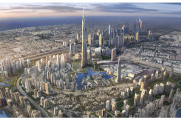

NOVOSTI

Coca Cola otvorila pogon u Afganistanu
Manje od pet godine nakon što su savezničke trupe predvođene američkim oružanim snagama otpočele invaziju na Afganistan, u toj azijskom zemlji otvoren je pogon jednog od divova američke "junk food" industrije, Coca Cole. Prikaži više ...

Milijuni klikova koji ništa ne vrijede
Unatoč desecima milijuna posjetitelja te gomili novog i atraktivnog sadržaja svaki dan, megapopularni web servisi You Tube i MySpace ne zarađuju ni lipe, pokazala je analiza jedne britanske tvrtke. Prikaži više ...
Slovenci se pitaju zašto je kruh u Hrvatskoj jeftiniji
Otkriće vodeće slovenske udruge za zaštitu potrošača da se kruh jedne domaće pekarnice u Mercatorovim trgovinama u Hrvatskoj prodaje po upola nižoj cijeni nego u Sloveniji oživjel je polemike tko je kriv za velika poskupljenja hrane?. Prikaži više ...
Finske ratne brodove vrijedne 4 milijuna eura MORH platio 9?
Da nabava vojne opreme u Hrvatskoj ne može proći bez skandala potvrdilo je pisanje Jutarnjeg lista o cijenama ratnih brodova za koje Hrvatska i Finska navode različitu cijenu. Prikaži više ...

Dubai još jednom pomaknuo granice arhitekture
Dubai u ponedjeljak otvara najviši toranj na svijetu s ambicijom da pomakne granice arhitekture ali i nadom u poboljšanje imidža okrnjena dužničkom krizom. Prikaži više ...